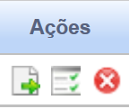

Repouso Semanal Remunerado (RSR)
O **Repouso Semanal Remunerado (RSR)** é um direito de todo trabalhador, garantido para proporcionar descanso após uma semana de trabalho. A legislação brasileira estabelece que o RSR deve ser concedido preferencialmente aos domingos.
Regras sobre a Perda da Remuneração (Desconto)
A dúvida sobre "deduções da base de cálculo do RSR" geralmente está relacionada a quando o empregado perde o direito à remuneração do DSR, ou seja, quando há o desconto correspondente ao repouso semanal no salário. O trabalhador perde a remuneração do RSR (o valor correspondente ao dia de descanso é descontado) quando ele não cumpre a jornada integral de trabalho na semana anterior, sem uma justificativa legal.
Principais Causas de Desconto do RSR (ou DSR)
- Faltas Injustificadas: O empregado que falta ao trabalho sem apresentar um atestado médico ou outra justificativa legalmente aceita perde o direito à remuneração do RSR daquela semana.
- Atrasos Não Compensados: Atrasos e saídas antecipadas não compensadas que ultrapassem o limite de tolerância legal (geralmente 5 minutos por ponto, limitado a 10 minutos diários) podem resultar na perda da remuneração do RSR.
É importante ressaltar que a perda do direito à remuneração do RSR (o desconto) não significa que o empregado perde o dia de descanso. Ele ainda tem o direito ao descanso físico, mas não será remunerado por aquele dia.
Base Legal e Jurisprudência
O direito ao Repouso Semanal Remunerado está previsto na legislação trabalhista brasileira, com as seguintes fontes:
Fontes Normativas
Constituição Federal de 1988 (CF/88):
- Artigo 7º, inciso XV:
Garante o repouso semanal remunerado, preferencialmente aos domingos.
Consolidação das Leis do Trabalho (CLT):
- Artigo 67:
Estabelece que todo empregado tem direito ao RSR de 24 (vinte e quatro) horas consecutivas, que, salvo motivo de conveniência pública ou necessidade imperiosa do serviço, deverá coincidir com o domingo.
Jurisprudência
Súmulas e Orientações Jurisprudenciais do TST:
Súmula nº 172 do TST:
Computam-se no cálculo do RSR as horas extras habitualmente prestadas.
Base de Cálculo e Deduções
O Repouso Semanal Remunerado (RSR), também conhecido como Descanso Semanal Remunerado (DSR), é um direito do trabalhador e o seu pagamento já está incluso no salário mensal para os mensalistas e quinzenalistas.
Parcelas que Integram a Base de Cálculo:
A base de cálculo do RSR é composta por todas as parcelas de natureza salarial pagas ao empregado de forma habitual, como:
- Salário-base.
- Comissões.
- Horas extras habituais. (Súmula 172 do TST)
- Adicional noturno.
- Adicionais de insalubridade e periculosidade.
- Prêmios e gratificações pagas de forma habitual.
Ou seja, tudo o que o empregado recebe de forma habitual e tem natureza de contraprestação pelo trabalho entra na base de cálculo para a integração do RSR.
Parcelas Excluídas (Não Integram a Base):
Algumas parcelas recebidas pelo empregado não são consideradas de natureza salarial e, por isso, não integram a base de cálculo para o RSR:
- Gorjetas (Súmula TST nº 354).
- Gratificações por Tempo de Serviço e Produtividade pagas mensalmente (Resolução TST nº 14/85).
- Diárias para viagem (desde que não excedam 50% do salário do empregado).
- Ajuda de custo.
- Vale-transporte e vale-refeição/alimentação (quando o benefício não é considerado de natureza salarial).
- Participação nos lucros e resultados (PLR).
Cálculo e Exemplos
O valor do RSR para empregados mensalista já está incluído no salário, mas para aqueles com remuneração variável (ex: comissões, horas extras habituais), o cálculo é necessário. A fórmula é a seguinte:
RSR = (Valor total da remuneração variável / número de dias úteis no mês) x número de dias de descanso remunerado no mês
Exemplo Prático:
Um vendedor com salário fixo de R$ 2.000,00 e comissões de R$ 800,00 em um mês com 25 dias úteis e 5 dias de descanso remunerado. O cálculo do RSR sobre as comissões é:
- Valor do RSR: (R$ 800,00 / 25) x 5 = **R$ 160,00**
Este valor é somado ao salário fixo, totalizando R$ 2.960,00 (2000+800+160).
Incidências (Impostos e Contribuições)
O RSR tem natureza salarial e, portanto, é considerado para a base de cálculo de:
- Imposto de Renda Retido na Fonte (IRRF): O valor do RSR compõe o rendimento tributável do trabalhador, sendo somado aos demais rendimentos brutos para o cálculo do imposto devido.
- Contribuição Previdenciária (INSS): O RSR também integra a base de cálculo da contribuição do INSS devida pelo empregado.
- Fundo de Garantia por Tempo de Serviço (FGTS): O RSR entra na base de cálculo para o depósito do FGTS (8% sobre o total da remuneração), que é uma obrigação do empregador.
Resumindo: O RSR é uma verba salarial e, por isso, a regra geral é que ele está sujeito à tributação normal (INSS e IRRF), assim como o salário-base e outros adicionais.
Verbas Reflexas
Os valores de RSR calculados sobre remuneração variável, como horas extras e comissões, refletem em outras verbas contratuais e rescisórias. O cálculo deve ser realizado em cada verba de forma específica, considerando a média dos valores de RSR recebidos no período.
| Verba Reflexa | Relação com o RSR (Variável) |
|---|---|
| 13º Salário | O RSR sobre variáveis integra a base de cálculo para o 13º salário, geralmente pela média dos valores recebidos no ano. |
| Férias + 1/3 Constitucional | O RSR sobre variáveis integra a base de cálculo das férias (aquisitivas e proporcionais) e do terço constitucional, pela média dos valores do período aquisitivo. |
| Aviso Prévio Indenizado | O RSR sobre variáveis integra a base de cálculo para o pagamento do Aviso Prévio Indenizado (juntamente com as demais verbas salariais). |
| Depósito FGTS (8%) | O valor do RSR (fixo e variável) integra a base de cálculo para o depósito obrigatório de 8% do FGTS. |
| Multa de 40% do FGTS | O RSR (fixo e variável) integra o cálculo da base de depósito para apuração da Multa Rescisória de 40%. |
Exemplo Prático: Empregado que recebe R$ 160,00 de RSR por mês (sobre comissões), terá um reflexo no 13º salário (se considerado o ano completo) de R$ 160,00 x 12 meses / 12 meses = R$ 160,00.
Calculadora (Simulação)
Utilize esta ferramenta para calcular o valor do RSR sobre remuneração variável.
Cálculo Simples
Lançamento no PJe-Calc
A seguir, confira o passo a passo para o lançamento da verba no PJe-Calc, utilizando a opção "Expresso":
-
Acessar Verbas e Escolher Lançamento: No menu de
navegação à esquerda, clique na opção Verbas para iniciar o lançamento. Após o
comando, será exibida a tela para escolha do Lançamento da Verba. Escolha a opção Expresso.

- Seleção da Verba: O sistema abrirá as opções de verbas, escolha a verba Repouso Semanal Remunerado e clique no botão Salvar
-
Quadro de Verbas e Ações: O sistema exibirá um quadro
com os campos:
- Ações - contendo as opções de configurações da verba selecionada (parâmetros, ocorrências e exclusão) 
-
- Parâmetros da Verba

-
- Ocorrências da Verba

-
- Excluir

- Verba Principal - verba selecionada para lançamento.
- Verba Reflexa - em que ao clicar no botão Exibir serão listadas todas as verbas reflexas ligadas a Verba Principal.
- Parametrização da Verba: Ao clicar no botão Parâmetros da Verba serão exibidas todas as configurações necessárias para a parametrização da Verba Principal.
- Registro de Ocorrências: Ao clicar no botão Ocorrências da Verba serão exibidas todas as configurações necessárias para registro das ocorrências da Verba Principal.